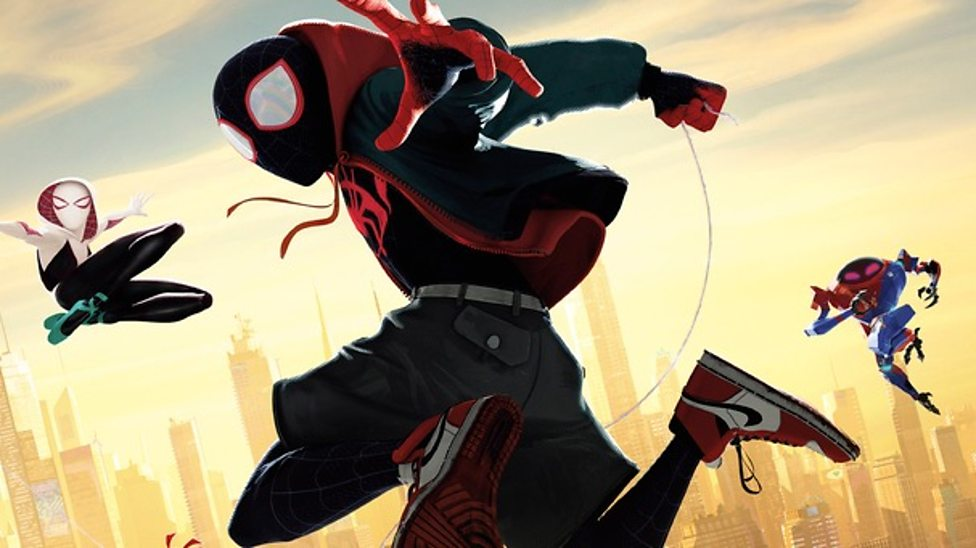

About Miles
Miles Morales is a young kid from brooklyn! while he was visiting his uncle Aaron davis he was bitten by a spider, but not just any spider an Oz-enhanced spider and from then on could do anything a spider can! like climb tall buildings and jump as high as possible and best of all he developed his own web shooter! So he could swing all around new york
Miles swinging
Miles's characteristics
- He is a young spiderman
- He has so many different abilities
- His strength is unmatched by men
Miles's friends
Miles is friends< with many different spider friends who help on his way. Click on the link below to read more about them: